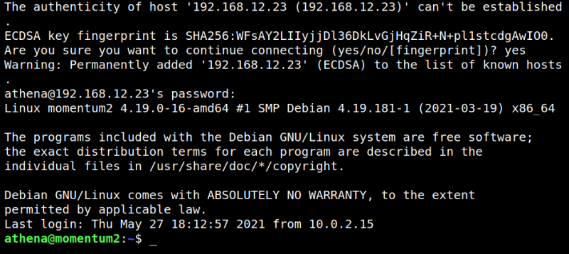
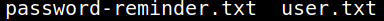
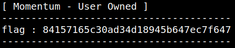

4.1 Log in via SSH as "athena" (First flag))
1. On your Kali Machine, login via SSH as “
athena” user. The password is “myvulnerableapp*”.$ssh athena@192.168.12.23
Output:

2. List the files.
athena@momentum2:~$ls
Output:

3. Show the file “
user.txt”.auxerre@Momentum:~$cat user.txt
Output:
